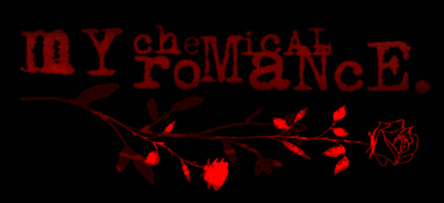

dear god the Girl has got to babble about herself despite not remembering who she is (these are the effects of not connecting with another human soul in years)
im Bloodess, an emo transfem who was born to be the internet's most teen aged girl. unfortunately that also included a penis to have an existential crisis about for the rest of my life, but that couldnt stop me from calling myself a doll and acting like one anyway
im 23 years old, and came out as transgender at 15 and even after repressing HARD for 7 years living with my parents, hiding my pills for months and running off the second my lease got signed i STILL just boymode everywhere Good Grief !!
i have lots of interests in electronics, mechanics, engineering, etc. which i COULD have done as a career. but the Transgender Question is dark gift of such heavy gravity and i get the really common testimonial that im like an encyclopedia. thats just what a Normal Girl is!!! it is NOT My fault you cant help but bask in my greatness
im not super artistic but there are remnants of my sketches out of the early 2020s (which all died around 2022 after a breakup. dont know what thats about) and even recordings of me playing my Vintage Statesboro in Whisky Sour ANNABELLE!!
thankfully ever since ive moved my Fucking Insane meter has increased dramatically. who knew Bloodess would worship figures of vampires and angels AND the divine. its almost as if my identity has far surpassed anything no feeble mortal could ever know...
that and ive just come to terms with realizing my own masochism and how much i crave the fantasy of an older woman dismantling me by my doll joints and choked. Oops.
i really admire a lot of old geocities site designs, mostly due to how the internet was really perceived then and it being a huge piece of self expression. have to say im not a fan of the internet in general becoming an enormously industrialized and hellscape filled at least 10000x more fascists
also really love a lot of older 2000s stuff and mostly stuff from my own childhood--blues clues is still based, american tale probably made me a furry on top of being raised on a sega genesis and dreamcast
i never particularly had the kind of wealth nor interest to get into the current console(s) of the day, so id really contribute that to most of my favorite games in general being pretty smack dab in a windows 9x up to the mid 2000s. truth be told i dont think ive ever spent $60 on a game AT ONCE, i think ive probably spent hundreds in TF2 because i am ungodly impulsive and thats an achievement i hope to uphold
most of what i play on steam nowadays is TF2, youre always welcome to join or invite me to CASUAL, HOLY SHIT COMP TF2 PLAYERS PLEASE STOP ADDING ME CHALLENGE matches
however if you offer half-life deathmatch (or any besides QDM) your ass is on
and heres your lightning round of info about me if youve managed to read this far
favorite games:
SIGNALIS her pain resonates with me to my core. she moved me in a way so few ever have. [insert transgender stereotype], terraria, sonic adventure 2, legacy of kain: soul reaver love the whole LOK series but soul reaver by far is the most polished somehow lol, diablo, sonic the hedgehog 2, tyrian, grand theft auto III, quake, half-life, unreal tournament, deus ex, team fortress 2, DUSK, HROT, i think these are what the kids call "boomer shooters" nowadays? you people make me feel old as shit
favorite music:
my chemical romance is my whole damn brand this should be obvious, funeral for a friend, against me!, korn, mindless self indulgence, alexisonfire, the used, etc. ill acknowledge these days because brand but in middle and high school i was into like pink floyd, alan parson's project, goblin, electric light orchestra, porter robinson, lagwagon, utah phillips, childish gambino, tally hall, lemon demon,
i.e. literally nothing id consider Shit Music. ill still probably listen to anything except REALLY awful white people music
favorite movies:
you know, im not really a big movie motherfucker (unlike my man NATHAN)
the crow, i like(d) the original fist of the north star ova from 1986, the warriors, i used to watch the deadly spawn a lot dont ask, for some reason i have a random interest in extremely fucking long mafia movies (e.g. godfather, scarface, the irishman, etc.) and also a lot of 70s movies in general which that i can at least explain mostly since im not a fan of the insane pacing and the disney industrial complex of the current film industry, el camino was nice as well but that also kinda ties into shows i guess
favorite shows:
fist of the north star, mst3k, space ghost: coast to coast, lexx, breaking bad/better call saul, is avgn even technically a show? at least up until what apparently james considers season 7, currently disappointed how screenwave media basically went machinima on his ass and the writing's really suffered as a result, and midnight mass since i too am a fan of MONOLOGUES!!!
favorite things:
cerulyn, food kind of a misnomer because im fairly dystrophic these days and if i eat more than like 600kcal i get fucking sick, kisses, webcore Is Apparently A Term and i dig it, my HP t5720 thin client pc expanded with an SB live love that thing more than my like $1200 bonkers semi-passive cooled pc, weed, james o'barr's the crow, electronics in a general scope, YURI DEAR GOD YURI I CANNOT LIVE WITHOUT GIRL LOVE my bloodthirst has been superseded by an EVEN DARKER HUNGER and it is TOXIC YURI!!! and even DOOMED YURI but the tragedy in my heart can barely withstand her, bunnies? please show my your rabbits. please please please, using she/her pronouns because im already emo. that should be enough material for you to work off of you seethe cope dilate fuckin idiots, and my infinite enslaught of your mom jokes and repeating anything you say containing the letter 3 but saying "squee"
thats about it, if you have any other questions or Inquiries you should probably contact me directly
and if you havent already you better fucking sign my guestbook or i will cast unspeakable horrors upon you